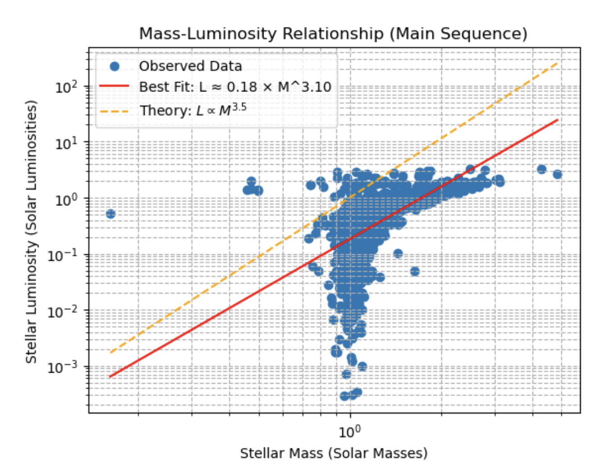
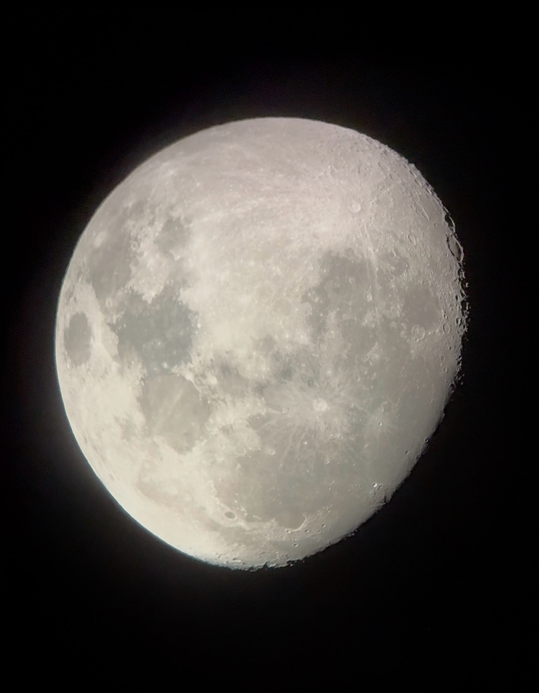

Projects
A collection of coding projects I've worked on during my time at UC Berkeley.
Python DeCal Final Project
Spring 2025
My final project analyzed the mass-luminosity relation of over 30,000 stars using NASA data.
I found that the line of best fit for the stars closely followed the anticipated relation L ∝ M3.5. This image is my final plot.
You can scroll through my full project write-up below.

Creating a Website for UAS
2025–2026
During my time as Marketing and Website Development Officer, I created the Undergraduate Astronomy Society's website.
I started completely from scratch, much like this website, and built the structure, layout, and overall design until it matched the organization's informational and aesthetic needs.
The site is now managed by another student, but its original foundation and design were created by me.
Visit uasberkeley.github.io ↗